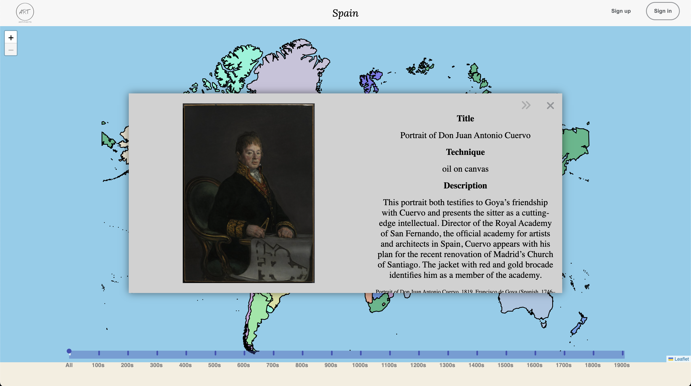

A ARTifacts Page
ARTifacts, the last of my projects, was a collaborative effort by myself alongside three other talented engineers. I took on the role as flex developer during the duration of the project, helping both the frontend and backend.
ARTifacts uses the power of the MERN stack to deliver a comprehensive and visually engaging platform for exploring global art through time. With its interactive world map, timeline navigation, and detailed artwork display, users can embark on a captivating journey to discover and appreciate art from diverse regions and historical periods. The integration of user interaction features, such as favoriting artwork and following other users, further enriches the experience, fostering a sense of community and shared discovery. ArtMap strives to create an immersive and educational platform that connects art enthusiasts and promotes the appreciation of art from around the world.